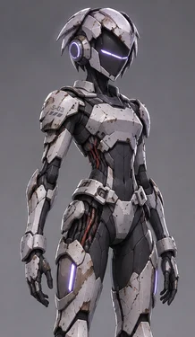

Bearframe RPGSounding Ridge
Beneath the orbital city, a Guardian keeps watch beside the buried stasis berths. One visor is waking.

Bearframe RPGBeneath the orbital city, a Guardian keeps watch beside the buried stasis berths. One visor is waking.